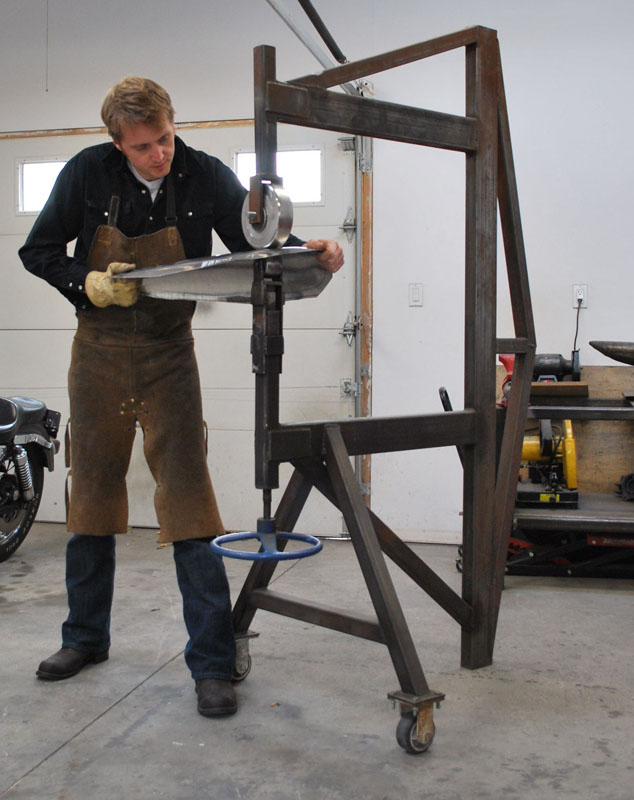

Artist Background: Brandon Vickerd

Brandon Vickerd
Brandon Vickerd is a Canadian artist based in Hamilton, Ontario. His practice operates at the intersection of public art, material experimentation, and conceptual inquiry. Known for transforming everyday spaces through unexpected artistic interventions, Vickerd consistently challenges how we perceive the built environment and the assumptions that underpin our interactions with it.
Access his website here
Career Overview: Merging Precision with Provocation
Vickerd has developed a distinctive career rooted in public art, where his works often appear embedded in urban or institutional contexts. His sculptures are characterized by their refined execution, technical fluency, and deliberate placement—qualities that anchor them in reality even as they disrupt it.
In A State of Rest, Vickerd acts not only as sculptor but also as designer of the benches, unifying artistic vision and functional object. This dual authorship emphasizes his belief in holistic design: the idea that context, material, and concept must work in concert to provoke reflection. The seamless integration of form and function enables the artwork to slip fluidly into the daily life of its surroundings while still offering a quiet but insistent interruption to it.
Artistic themes
QUESTIONING THE MYTH OF PROGRESS
Vickerd’s practice frequently interrogates the so-called “dominant myth of progress”—the belief in linear advancement, technological superiority, and the triumph of human industry over nature. In place of this narrative, his works introduce subtle disruptions: moments where something doesn’t quite fit, where what appears familiar becomes strange. These moments are designed not to alienate, but to spark critical awareness.
In A State of Rest, this challenge is embedded in the contradiction between naturalistic animal forms and urban infrastructure. The peaceful pose of a fawn or fox gives way to a larger question: at what cost does tranquility exist in an environment so thoroughly shaped by human priorities? By embedding wildlife into structures intended for human use, Vickerd urges the viewer to reconsider what is truly “natural” in contemporary urban life—and what has been displaced in the name of progress.
His work resonates with the ideas of Michel de Certeau, who wrote about the creative subversions embedded in everyday spaces, and with Claire Bishop’s insights on installation art as a medium that activates the viewer as participant. Vickerd’s installations are not static monuments but dynamic propositions: open-ended, contingent, and often quietly radical.